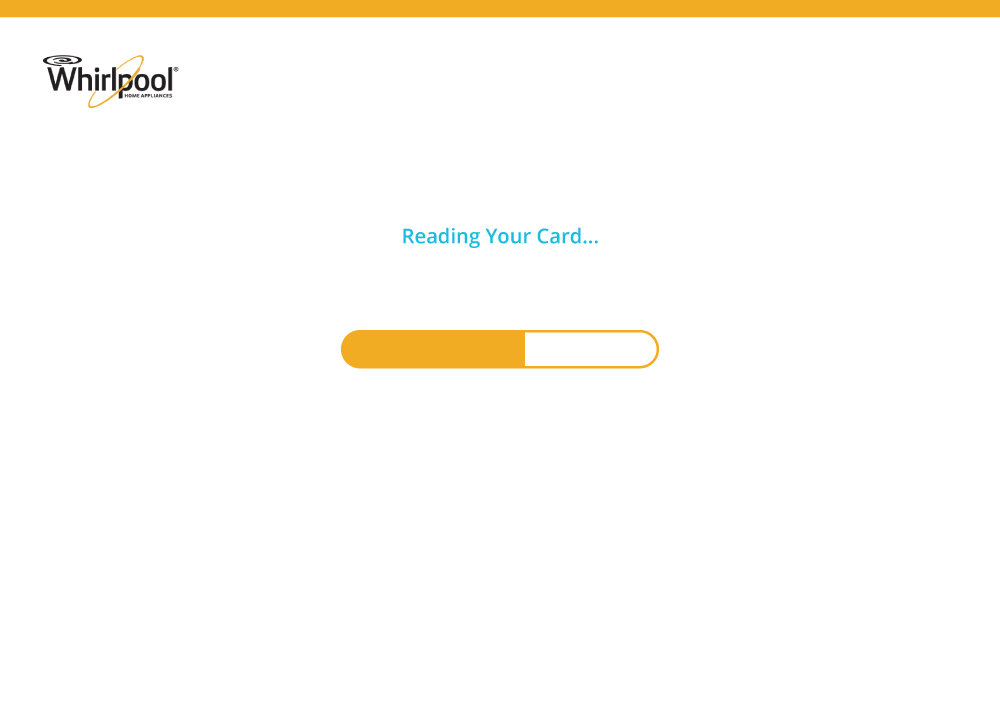
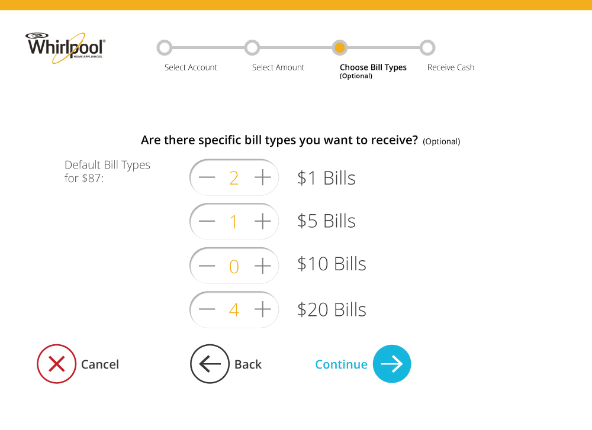
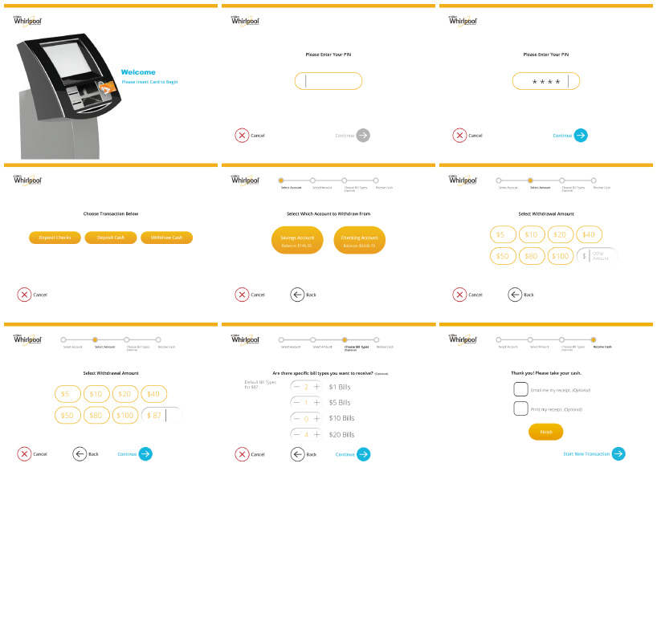

UX: Redesigning the ATM Experience
Redesigned an ATM based on user research and the brand language of Whirlpool appliances
Existing ATM
Tasked with redesigning an ATM, I chose my location to be the CMU University Center, a place with a lot of traffic and many dining areas. To start, I went to my location and observed the area as well as the ATM. The current ATM is right next to the buildings far left side entrance, which takes a while to get to if you enter from any of the other building entrances. I noticed that lines would form directly behind the ATMs, causing blockage for the traffic of people entering or leaving through the side entrance. From a security standpoint, there are also a lot of people that constantly walk behind the users at the ATMs.
User Research
To redesign the experience, I first did a task analysis of the current ATM. Through observation and using the ATM, I identified possible issues and areas for improvement, but also what I thought worked well. Based on my task analysis, I came up with the questions I used to interview and survey participants, and then I analyzed the results to determine what areas to focus on for my first iteration.
Me and 2 other students, Daniel Kison and Vivian Qiu, all chose to work on an ATM and together we created personas and a stakeholder map to begin to define a user group and what their needs may be.
Whirlpool Brand Research
Me and 3 other students, Vicky Hwang, Zac Mau, and Gabe Mitchell, were all given Whirlpool appliances as the brand that our kiosk had to fit within. Together we created a style guide that included the brand's values, the form language of their various home appliances, and the UI details of their website and WashSquad mobile app.
While their home appliances are very boxy and simplistic, I drew out the details of their buttons, proportions, colors, feature lines, etc to bring over to the design of my own ATM.
User Interface Design Process
We were tasked with choosing one of the ATM processes to demonstrate our UI. I picked the withdrawal process since all of the surveyed and interviewed users said they use ATMs to withdraw cash. I diagramed the current ATM withdrawal process and eliminated some complexity to diagram my own process. After creating a mid-fi prototype of my process, I tested it with a few users to see what needed to be fixed. From there, I continued to develop my UI to address issues mentioned by participants, and to start incorporating design elements from the Whirlpool brand. Before my final UI, I again tested the printed out screens with other users to identify possible problems. For example, some users pointed out the added complexity of the withdrawal/deposit tabs, which were originally added for those who want to complete both types of transactions. Click HERE to see my 1st iteration and click HERE to see my 2nd iteration.
Physical Form Design Process
After researching the physical requirements for blind and wheelchair-accessible kiosks, I started sketching out possible forms for the ATM. I explored a variety of different body shapes, from simple to complex and literal to abstract. I also began thinking about the different physical interactions with the machine and how the physical portion would work with together with the UI. I sketched out different ways that Whirlpool's VBL could be incorporated into the physical form, and made full scale and scaled models to test out the aesthetics and ergonomics of my designs throughout the process.
Final Design
- 

- 
‹
›
UI
My final UI had the VBL of Whirlpool interfaces, reduced complexity, and included the option to choose bill types and receipts. Click HERE to try it out! The prototype is set to allow you to withdraw $87.
CONTEXT
The final location was at the center of the UC, closer to all of the other 4 main entrances. There is a large common area where student organizations have food sales that require cash. There is a round wall with embedded hubs within, and on the other side of that wall, there is a seating area where many students hang out. I placed my 2 ATMs within one of the hubs, offering the privacy of the enclosed area while having the convenience of a high traffic area. The lines would be able to form around the wall to not interrupt traffic or the students selling food.
PHYSICAL FORM
My physical ATM had Whirlpool elements such as the rectalinear shapes, rounded rectangle interfaces, blue lighting touchpad, Whirlpool smile, etc. I created a Solidworks/Keyshot rendering of the form along with a small foam model and a full scale foam core model to demonstrate my design. To learn more, scroll down below!
